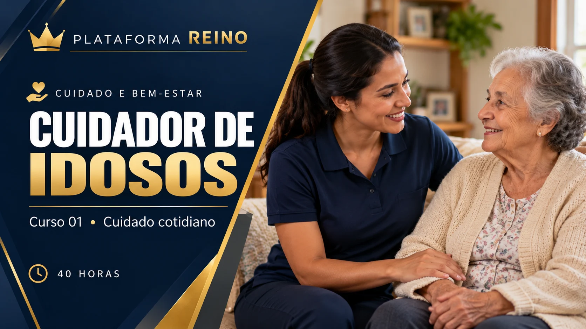
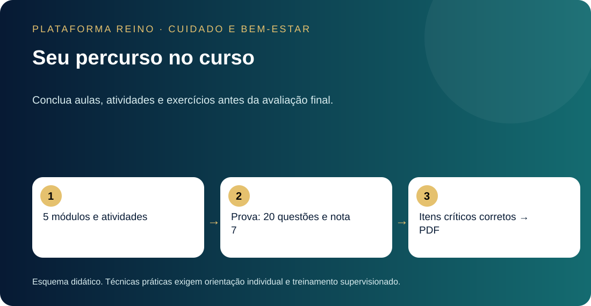

CUIDADO E BEM-ESTAR · CURSO 01 · 40 HORAS
Cuidador de Idosos
Cuidado cotidiano com respeito, segurança e autonomia.
CONTEÚDO AUTORAL
Plataforma Reino · Desenvolvimento: Khassio Silva
Grade curricular e metodologia
Objetivo: organizar o apoio cotidiano à pessoa idosa, respeitar escolhas e capacidades, identificar riscos, registrar ocorrências e reconhecer quando solicitar ajuda.
Público: mulheres e homens, familiares e cuidadores iniciantes. Requisitos: leitura, escrita e acesso à internet. Use dados fictícios nas atividades.
| Módulo | Carga | Competência |
|---|---|---|
| 1. Fundamentos do cuidado | 8h | Reconhecer capacidades, direitos, responsabilidades e proteção da pessoa idosa. |
| 2. Cuidados diários | 8h | Organizar higiene, conforto e apoio às refeições segundo orientação individual. |
| 3. Mobilidade e segurança | 8h | Identificar riscos e respeitar os limites do apoio à mobilidade. |
| 4. Comunicação e cognição | 8h | Comunicar com respeito, adaptar rotinas e organizar apoio da família. |
| 5. Rotina e situações de alerta | 8h | Registrar cuidados, respeitar prescrições e comunicar sinais de alerta. |
| Total | 40h | 20 aulas, 5 atividades práticas, 100 exercícios e prova final. |
Como aprender
Cada módulo prevê quatro aulas de duas horas, incluindo leitura, esquemas visuais, estudo de caso, exercícios e revisão. No módulo 5, a carga inclui a prova final. A carga é um planejamento de estudo e aplicação, não a duração de um vídeo nem tempo medido automaticamente.
Leia a explicação, observe o esquema da aula, analise o exemplo e responda ao exercício guiado. Depois registre a atividade prática e conclua as 20 questões do módulo, com correção comentada. Revise antes de avançar.
Avaliação e certificado
Conclua os cinco módulos, as 20 aulas e as atividades antes de fazer a prova final de 20 questões. A aprovação exige nota mínima 7,0 (14 acertos) e acerto de todos os cinco itens críticos de segurança: alimentação individualizada, engasgo, queda com suspeita de lesão, medicamentos e emergência. O certificado fica disponível em PDF após aprovação. Se não cumprir os critérios, revise e inicie novo ciclo; o histórico fica preservado.
O caso integrador tem cinco critérios de autoavaliação: respeito e autonomia; segurança; limites da atuação; registros e comunicação; organização da rotina. As respostas escritas são registradas, mas não recebem avaliação clínica automática.
Alcance da formação
Curso livre introdutório de cuidado cotidiano. Não habilita para diagnóstico, prescrição, técnicas de enfermagem, procedimentos invasivos, manobras de transferência ou primeiros socorros. Aprendizado on-line não comprova habilidade prática. Na atuação real, mobilização, dieta, medicamentos e equipamentos devem seguir orientação individual de profissional habilitado.
Conteúdos das aulas
Módulo 1 — Fundamentos do cuidado
- Envelhecimento e necessidades individuais
- Autonomia, consentimento e privacidade
- Papel do cuidador e equipe de saúde
- Ética, proteção e identificação de violência
Módulo 2 — Cuidados diários
- Higiene pessoal e oral
- Vestuário, conforto, sono e pele
- Alimentação e hidratação individualizadas
- Dificuldade para engolir e sinais de engasgo
Módulo 3 — Mobilidade e segurança
- Riscos no ambiente doméstico
- Prevenção de quedas e apoios
- Ergonomia e limites do apoio à mobilidade
- Conforto e mudança de posição
Módulo 4 — Comunicação e cognição
- Escuta e comunicação acessível
- Alterações cognitivas e cuidado centrado na pessoa
- Rotina e atividades significativas
- Família, cooperação e autocuidado do cuidador
Módulo 5 — Rotina e situações de alerta
- Rotina de cuidado e registros
- Apoio à rotina de medicamentos prescritos
- Sinais de alerta e comunicação de emergência
- Caso integrador, revisão e avaliação final
Carregando seu curso…
Seu percurso
Estude, pratique, revise a segurança e faça a prova. O progresso está vinculado à sua conta.

Referências e organização
Conteúdo autoral apoiado em fontes oficiais. As instituições citadas não certificam nem patrocinam este curso. As imagens são ilustrações didáticas, sem demonstração de procedimentos. O conteúdo não recebeu revisão clínica independente nesta publicação; não substitui orientação de saúde nem treinamento presencial.
Código: CURSO/CBE/01/REINO/00001